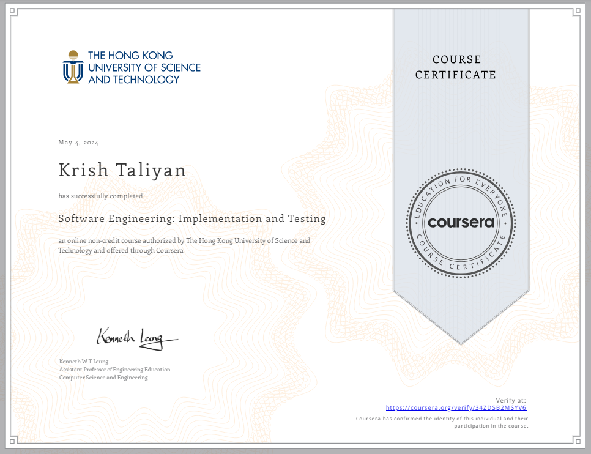
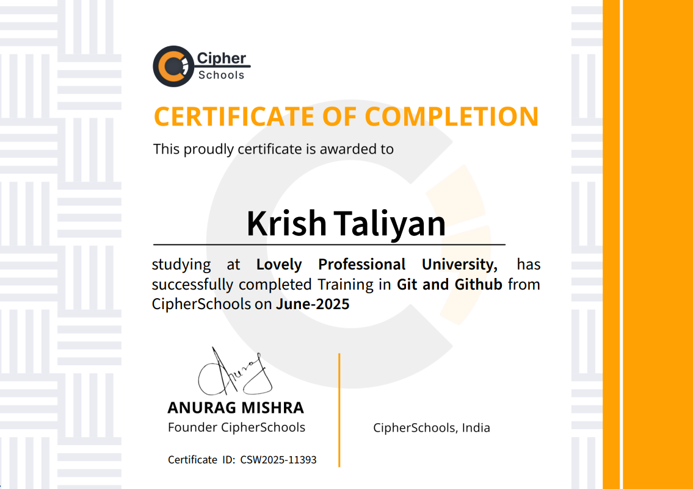

Transforming complex problems into elegant, scalable solutions through code. Specializing in MERN stack architecture, teamwork, problem-solving, and time management.
I am a passionate Full-Stack Developer currently pursuing my Bachelor of Technology in Computer Science and Engineering at Lovely Professional University. I maintain a strong academic record with a CGPA of 8.08, while continuously expanding my practical skills. From solving complex algorithmic challenges to building full-scale MERN applications, I am driven by continuous learning and pushing technical boundaries.
Coding problems solved across data structures & algorithms on LeetCode
Gold rating achieved in Java on HackerRank
Software Development | Coursera
Git and Github | CipherSchools
Expanded full-stack applications using MongoDB, Express.js, React, and Node.js, strengthening backend-frontend integration and accelerating feature delivery by 30%. Implemented CRUD operation, REST APIs, and component-based UI development to enhance the application scalability and improve response efficiency by 25%. Gained hands-on experience in authentication, routing, and state management, resulting a 35% improvement in overall project functionality and practical implementation skills.
Computer Science and Engineering. Current CGPA: 8.08.
Graduated with a Percentage of 91%.
Engineered a food delivery platform enabling users to discover nearby vendors, manage cart operations and, complete seamless checkout workflows across an integrated MERN stack system. Secured application route and APIs using JWT-based authentication with role-based access (User/Restaurant), ensuring controlled data flow and scalable backend architecture. Delivered responsive React + Tailwind interface with optimized API communication via Axios.
Developed a full-stack platform enabling startups and corporates to connect, collaborate, and explore partnership opportunities through structured profiles and role-based dashboards. Implemented secure authentication and authorization using JWT with middleware-based role access control. Designed a responsive React + Tailwind interface and integrated Axios for seamless frontend-backend communication.
Programmed and optimized CRUD operations for note management using MongoDB and Express.js, ensuring 90% reliability and reducing API response time by 35% through efficient design and query handling. Deployed a responsive and intuitive UI in React; improved user task completion speed by 40% due to clean component design. Implemented secure backend integration with Node.js and deployed the full-stack app, resulting in stable performance.
I actively test my problem-solving skills under pressure through competitive programming platforms and live hackathons, continuously refining my algorithmic logic.
I am passionate about collaborative software development and giving back to the community by contributing to open-source repositories and building public tools.

Completed a comprehensive certification focusing on core software development principles, clean coding practices, and modern methodologies.

Mastered version control systems, repository management, branching strategies, and collaborative software development.
Completed practical tasks in designing a simple, scalable, and secure hosting architecture.
I'm currently looking for new opportunities. Whether you have a question about my projects, a potential role, or just want to say hi, my inbox is open!